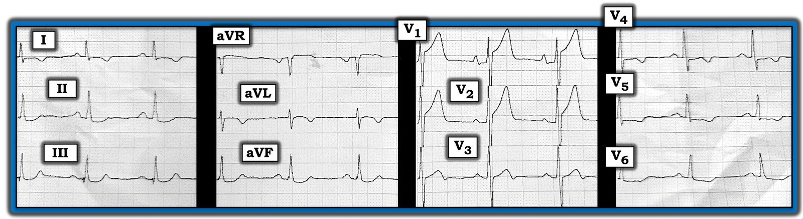
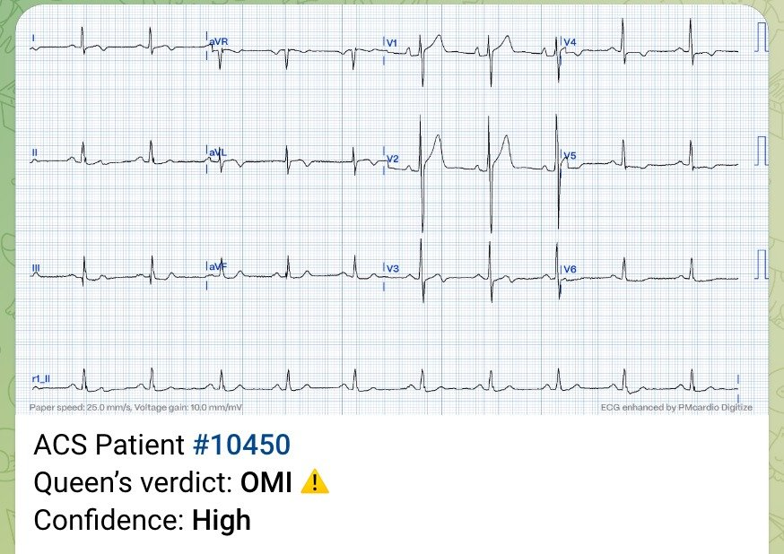
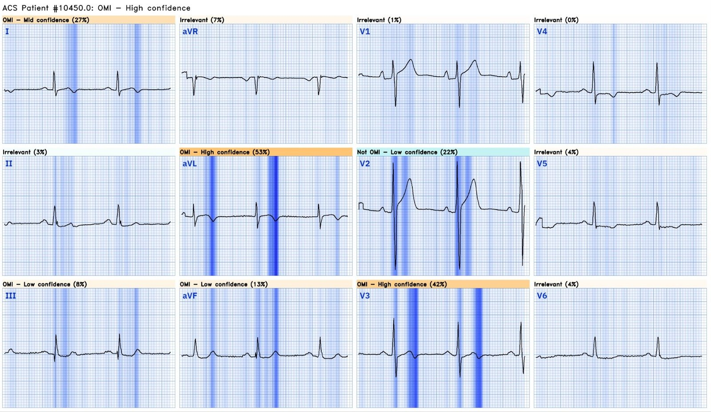
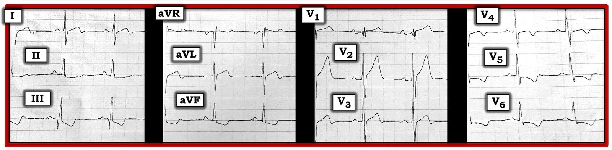
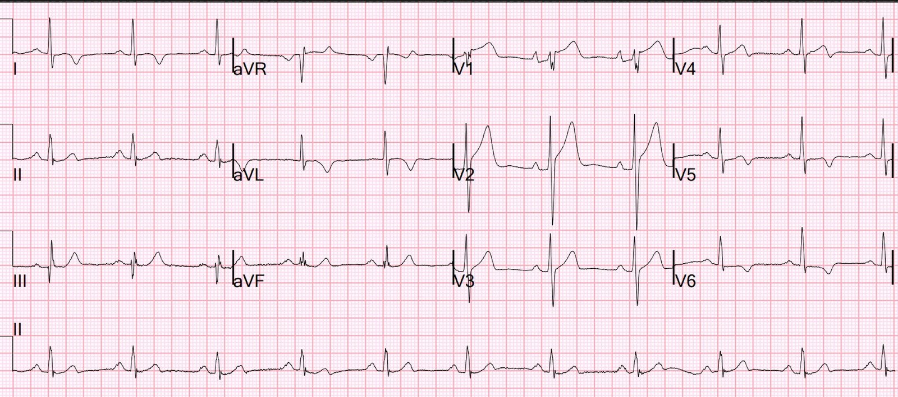
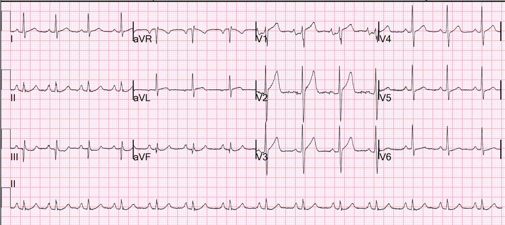
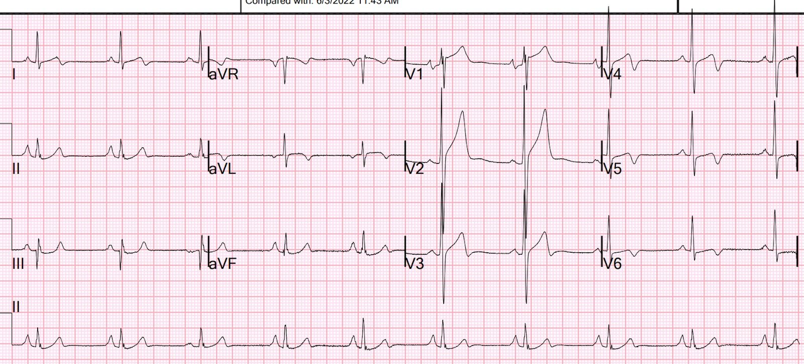
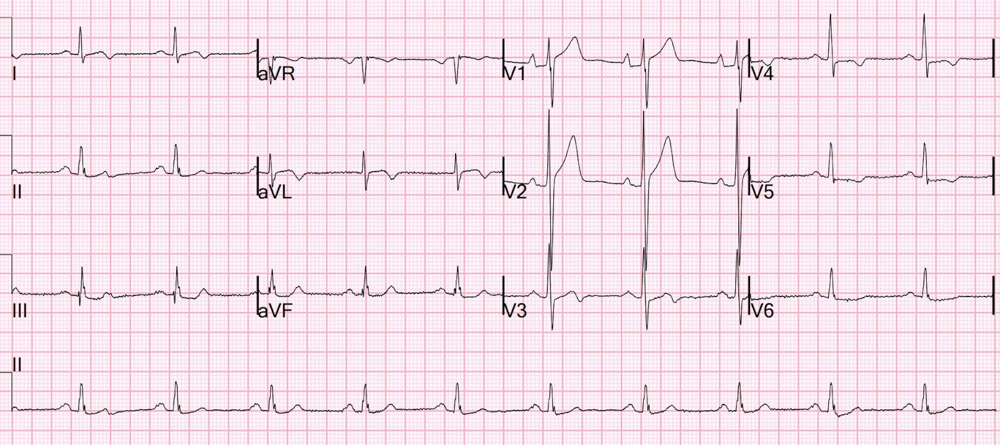
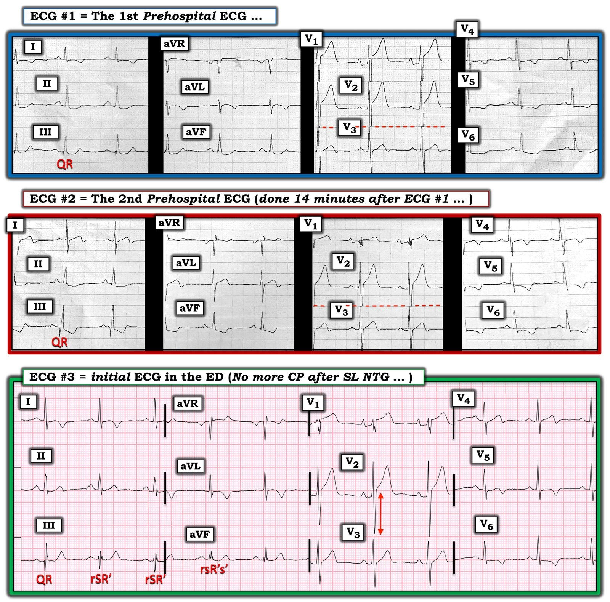

14/11/2023 — Điện tâm đồ cũ quan trọng đến mức nào trong những ca nghi OMI không rõ ràng?
Bản dịch tiếng Việt của bài "How important are old ECGs in Non-obvious cases of potential OMI?" – Dr. Smith’s ECG Blog. Giữ nguyên toàn bộ 10 hình ảnh của bản gốc.
Trong bài trước, chúng ta đã thấy các điện tâm đồ cũ quan trọng đến mức nào trong việc đánh giá điện tâm đồ hiện tại ở một bệnh nhân không có biểu hiện điển hình (trong ca trước đó, bệnh nhân không đau ngực, và hình ảnh có vẻ là OMI thành dưới lại không có ST chênh xuống soi gương (reciprocal) ở chuyển đạo aVL).
Đây là bài trước đó: A 90-something with acute stroke. She has no chest symptoms. What is the diagnosis?
Đây là một ca mới khác, trong đó các điện tâm đồ trước đây đóng vai trò then chốt:
Một bệnh nhân nam 60 mấy tuổi đột ngột đau ngực dữ dội như bị đè ép. Ông cho biết trước đây chưa từng bị như vậy. Đây là điện tâm đồ trước viện đầu tiên của ông:
Điện tâm đồ trước viện thứ 1


Bạn nghĩ gì?
Có những sóng có thể là sóng T tối cấp ở V1 và V2. Có một ít ST chênh xuống ở V5,6, gợi ý hình ảnh “xoáy” (“Swirl”). [Nếu bạn chưa chắc “Swirl” là gì, xem tại đây: Precordial Swirl — 20 cases of Swirl or Look-Alikes]
Đây là kết quả đọc của ứng dụng AI Queen of Hearts của PM Cardio:


Với phần giải thích (explainability), ở đây bạn có thể thấy những chuyển đạo nào đã tạo nên kết quả đọc đó:


Chúng tôi (Pendell Meyers và tôi) đã huấn luyện Queen bằng cách gắn nhãn điện tâm đồ là OMI “đang diễn ra” (Active) hoặc OMI “đã tái tưới máu” (Reperfused) (và cả “cấp” (Acute) hoặc “bán cấp” (Subacute), kèm độ tin cậy cao hoặc thấp). Như vậy có 8 nhóm OMI.
Tuy nhiên, Queen (chưa) sử dụng các phân loại huấn luyện đó để phân biệt OMI đang diễn ra với OMI đã tái tưới máu. Vì vậy, khi Queen thấy những sóng có vẻ là sóng tái tưới máu (sóng Wellens), như ở aVL và V3, Queen báo “OMI”.
Những ai trong chúng ta hiểu điện tâm đồ thiếu máu cục bộ đều biết rằng thực ra khi sóng T đảo ngược đặc hiệu cho huyết khối mạch vành thì nó cho thấy động mạch đã tái tưới máu, chứ không phải đang tắc.
Các phiên bản Queen trong tương lai sẽ phân biệt giữa “đang diễn ra” và “đã tái tưới máu”. Cá nhân tôi rất nóng lòng chờ phiên bản tương lai đó!
Đây là điện tâm đồ trước viện thứ 2, 14 phút sau


Lúc này, chuyển đạo aVL trông đặc biệt đáng lo (trông như thể động mạch đang tắc lại), với sóng T đảo ngược ít hơn và ST chênh lên tăng dần, kèm ST chênh xuống soi gương ở các chuyển đạo dưới.
Nhân viên cấp cứu ngoài viện đã kích hoạt phòng thông tim (cath lab). Bệnh nhân được dùng nitroglycerin (NTG) ngậm dưới lưỡi và cơn đau hết.
Đây là điện tâm đồ đầu tiên ghi tại khoa cấp cứu (ED), lúc này đã hết đau sau khi ngậm nitro dưới lưỡi:


Có hình ảnh có vẻ là sóng T tái tưới máu ở I và aVL.
Bác sĩ cấp cứu hoài nghi và cho rằng điện tâm đồ này là một hình ảnh giả (mimic), một dương tính giả.
Vì vậy họ đã xem lại hồ sơ bệnh án của bệnh nhân.
Đây là những gì họ tìm thấy:
Bệnh nhân vừa được khám cách đây 2 tháng vì nghi ngờ ACS và đã nhập viện với chẩn đoán “NSTEMI, nhưng tất cả các giá trị troponin đều không phát hiện được)
Đây là điện tâm đồ của ông từ 5 tháng trước:


Rất giống
Đây là điện tâm đồ từ lần nhập viện 2 tháng trước:


Trông rất giống các điện tâm đồ ở trên
Đây là một điện tâm đồ cũng từ lần nhập viện 2 tháng trước đó, ghi 30 phút sau điện tâm đồ đầu tiên:


Sau khi xem tất cả những điện tâm đồ này, các bác sĩ đã hủy kích hoạt phòng thông tim.
Kết cục:
Cả 4 lần đo troponin I độ nhạy cao (hs troponin I) liên tiếp, kéo dài đến 6 giờ, đều không phát hiện được.
Siêu âm tim chính thức trong lần nhập viện này, sau khi đã loại trừ bằng troponin:
Phân suất tống máu thất trái ước tính bình thường; 66%.
Không phát hiện rối loạn vận động thành.
Kích thước buồng thất trái bình thường, độ dày thành tăng mức độ vừa.
Điểm cần học:
1. Nếu có sẵn điện tâm đồ cũ, hãy tìm chúng và so sánh các điện tâm đồ hôm nay với những điện tâm đồ cũ đó.
Queen of Hearts chưa được huấn luyện để so sánh với các điện tâm đồ trước đây hay với các điện tâm đồ liên tiếp. Điều đó sẽ có trong tương lai khi được huấn luyện thêm.
Hy vọng ứng dụng AI Queen of Hearts sẽ được FDA phê duyệt trong quý 1 năm 2024. Ứng dụng đã được phê duyệt ở châu Âu.
BẠN CÓ CƠ HỘI ĐƯỢC TRUY CẬP SỚM PM Cardio AI BOT!! (ỨNG DỤNG AI OMI CỦA PM CARDIO)
Nếu bạn muốn bot này giúp bạn chẩn đoán sớm OMI và cứu bệnh nhân cùng cơ tim của họ, bạn có thể đăng ký để nhận phiên bản beta sớm của bot tại đây. Bot hiện chưa phát hành, nhưng đây là cách để bạn có tên trong danh sách.
https://share-eu1.hsforms.com/18cAH0ZK0RoiVG3RjC5dYdwfyfsg (biểu mẫu đăng ký nhận bản beta sớm)

==================================
BÌNH LUẬN CỦA TÔI, bởi KEN GRAUER, MD (14/11/2023):
==================================
Một trong những manh mối lâm sàng hữu ích nhất ủng hộ rằng một biến cố tim cấp đang diễn ra — là phát hiện các thay đổi điện tâm đồ “động” (dynamic).
- Như thường được nhấn mạnh trên Dr. Smith’s ECG Blog — diễn tiến của một OMI cấp không nhất thiết là tĩnh tại — mà có thể “động”. Ý muốn nói là ngay cả trước khi điều trị bằng thuốc tiêu sợi huyết và/hoặc PCI — động mạch “thủ phạm” bị tắc cấp có thể tự phát tái tưới máu. Khi điều này xảy ra — nó thường đi kèm với giảm ST chênh lên và giảm (hoặc hết) đau ngực.
- NHƯNG — Thứ gì tự phát mở ra — thì cũng có thể dễ dàng tự phát đóng lại — đôi khi trải qua quá trình tự phát mở lại này — rồi đóng lại — rồi lại mở ra — nhiều lần cho đến khi mạch máu đạt trạng thái cuối cùng.
- VÌ VẬY — Ở một bệnh nhân đến khám vì đau ngực mới (CP — Chest Pain) — các thay đổi ST-T tương quan với sự thay đổi về sự hiện diện và mức độ nặng tương đối của triệu chứng là dấu hiệu của thay đổi ST-T động gợi ý một OMI đang tiến triển cấp. (Để xem ví dụ về hiện tượng này — Xem Bình luận của tôi trong các bài ngày 14 tháng Hai năm 2018 — ngày 21 tháng Bảy năm 2020 — và ngày 22 tháng Mười Hai năm 2022 trên Dr. Smith’s ECG Blog).
CẢNH BÁO — Dù việc nhận ra thay đổi ST-T động có giá trị vô cùng lớn trong việc ủng hộ một biến cố tim cấp ở bệnh nhân đến khám vì đau ngực mới — dấu hiệu điện tâm đồ này không hoàn hảo.
- Từ góc độ lâm sàng — việc phát hiện thay đổi ST-T động tương quan với mức độ đau ngực thay đổi báo hiệu cần giả định OMI cấp cho đến khi chứng minh được điều ngược lại.
- Dù vậy — Chúng tôi đã công bố những ví dụ về các ngoại lệ thỉnh thoảng gặp, khi các biến thể tái cực hoặc một dạng bệnh lý tim khác (tức là viêm cơ tim) chứ không phải OMI cấp hóa ra mới là nguyên nhân gây thay đổi ST-T động. (Để xem ví dụ về những ngoại lệ như vậy — Xem Bình luận của tôi trong các bài ngày 9 tháng Một năm 2019 — ngày 22 tháng Tám năm 2020 — và ngày 30 tháng Sáu năm 2023 trên Dr. Smith’s ECG Blog).
Ca hôm nay là thêm một ví dụ nữa cho thấy thay đổi ST-T động không phải là chỉ điểm không bao giờ sai của một OMI đang tiến triển cấp.
- Để rõ ràng, trong Hình 1 — tôi đã đặt lại 3 bản ghi đầu tiên của ca hôm nay để minh họa thay đổi ST-T có thể biến đổi nhiều đến mức nào ở bệnh nhân này, người không bị OMI cấp.


BẠN sẽ diễn giải các bản ghi liên tiếp trong Hình 1 như thế nào?
Theo Dr. Smith — Bệnh nhân hôm nay là một nam giới 62 tuổi đột ngột đau ngực dữ dội. Điều trị bằng NTG ngậm dưới lưỡi đã làm giảm triệu chứng. Đội cấp cứu ngoài viện (EMS) đến — và ghi 2 điện tâm đồ. Bản ghi thứ 3 trong Hình 1 là điện tâm đồ đầu tiên tại khoa cấp cứu — ghi vào lúc cơn đau ngực của bệnh nhân đã hết. Tôi xin nêu các điểm sau:
- Điện tâm đồ #1 — rõ ràng bất thường. Nhịp là nhịp xoang — với trục và các khoảng bình thường.
- Tôi đã thêm các đường chấm ĐỎ tại chỗ chuyển tiếp giữa chuyển đạo V2 và V3 ở cả hai điện tâm đồ trước viện để làm nổi bật đặc điểm thường gặp này ở các bản ghi của EMS — trong đó các phức bộ QRS lớn thường bị cắt cụt. Chúng ta có ý niệm rõ hơn về biên độ thực của sóng S ở chuyển đạo V2 trên điện tâm đồ đầu tiên tại khoa cấp cứu ( = điện tâm đồ #3) — như được chỉ bởi mũi tên đôi ĐỎ ở bản ghi dưới cùng trong Hình 1.
- LƯU Ý: Điều quan trọng là cần biết hiệu ứng “cắt cụt tự động” rất thường gặp trên điện tâm đồ của EMS này — vì nếu không, người ta có thể đọc nhầm sóng ST-T có vẻ “lớn” là không tương xứng với sóng S ngắn ở điện tâm đồ #1 và 2, và do đó cho rằng đây là sóng T tối cấp (Xem Bình luận của tôi trong bài ngày 20 tháng Sáu năm 2020 trên Dr. Smith’s ECG Blog).
Quay lại các điện tâm đồ liên tiếp trong Hình 1:
- Ngay cả khi đã tính đến việc cắt cụt biên độ QRS ở các chuyển đạo V1,V2,V3 của điện tâm đồ #1 — các sóng ST-T rõ ràng đáng lo ngại. Có vẻ có ST chênh lên đáng kể, đặc biệt ở chuyển đạo V1 (ít hơn đôi chút ở chuyển đạo V2) — theo sau là sóng T hai pha với phần cuối âm ở chuyển đạo V2 — kèm ST chênh xuống và sóng T đảo ngược ở nhiều mức độ khác nhau ở hầu như tất cả các chuyển đạo còn lại. Ở một nam giới 62 tuổi bị đau ngực mới — trách nhiệm thuộc về chúng ta là phải giả định OMI cấp cho đến khi chứng minh được điều ngược lại.
- 14 phút sau — điện tâm đồ #2 được EMS ghi. So sánh từng chuyển đạo giữa điện tâm đồ #1 và điện tâm đồ #2 cho thấy trục thay đổi nhẹ (Lưu ý sóng S sâu hơn nhiều ở chuyển đạo I của điện tâm đồ #2) — nhưng điều này có lẽ không đủ để giải thích sự thay đổi rõ rệt về hình dạng ST-T ở các chuyển đạo I, III và aVL giữa 2 bản ghi.
- Ở các chuyển đạo trước tim — phức bộ QRS ở chuyển đạo V1 trông hoàn toàn khác trên điện tâm đồ #2 so với hình dạng QRS trên điện tâm đồ #1. Dù vậy, tăng tiến sóng R giữa 2 bản ghi này ở các chuyển đạo trước tim còn lại là tương tự. Điều này khiến tôi tin rằng sóng T đảo ngược sâu hơn ở các chuyển đạo V4,V5,V6 của điện tâm đồ #2 nhiều khả năng phản ánh một thay đổi thực sự.
- Ngay sau đó, khi đến khoa cấp cứu — điện tâm đồ #3 được ghi. So sánh từng chuyển đạo với điện tâm đồ #2 — cho thấy thêm những thay đổi ST-T đáng kể, ở bệnh nhân này, người lúc này đã hết đau ngực hoàn toàn. Cụ thể — sóng T đảo ngược ở các chuyển đạo I và aVL giờ rõ ràng sâu hơn so với ở điện tâm đồ #2 — và sóng T ở mỗi chuyển đạo dưới giờ nổi bật và dương, trong khi trước đó có ST chênh xuống ở mỗi chuyển đạo này.
- ĐIỀU CỐT LÕI: Đi kèm với mức độ nặng của triệu chứng thay đổi — các điện tâm đồ liên tiếp trong Hình 1 cho thấy rõ những thay đổi ST-T thực sự. Ở bệnh nhân này, người đến khám vì đau ngực mới — đây được xem là thay đổi ST-T “động”.
KẾT LUẬN CA BỆNH: Theo Dr. Smith — phòng thông tim ban đầu được kích hoạt dựa trên bệnh sử triệu chứng thay đổi đi kèm với thay đổi ST-T động trên 3 điện tâm đồ liên tiếp này, được trình bày trong Hình 1.
- NHƯNG — Xem lại hồ sơ bệnh án của bệnh nhân này cho thấy các điện tâm đồ trước đây có hình ảnh thay đổi điện tâm đồ dao động (labile) tương tự. Một số bệnh nhân có biểu hiện như vậy … tức là, có hình ảnh thay đổi ST-T dao động không do biến cố mạch vành cấp.
- Bất chấp những thay đổi ST-T có vẻ đáng lo trên các bản ghi liên tiếp trong Hình 1 — một biến cố cấp đã được loại trừ dứt khoát nhờ 4 lần troponin độ nhạy cao (hs troponin) liên tiếp âm tính — với bằng chứng ủng hộ thêm từ siêu âm tim cho thấy chức năng thất trái rất tốt, không có rối loạn vận động thành.
- Siêu âm tim có cho thấy “độ dày thành tăng mức độ vừa” — vì vậy LVH có lẽ đóng một vai trò trong hình dạng ST-T thay đổi thấy được ở lần nhập viện này và các lần trước (mặc dù các thay đổi ST-T chúng ta thấy không phải là những thay đổi dự kiến chỉ do LVH đơn thuần).
- SUY NGHĨ CUỐI CÙNG: Nhìn vào những thay đổi điện tâm đồ trên 3 bản ghi liên tiếp trong Hình 1, đi kèm với mức độ nặng của triệu chứng thay đổi ở bệnh nhân này — tôi hoàn toàn đồng ý với quyết định ban đầu kích hoạt phòng thông tim. Dù vậy — sau khi xem lại hồ sơ bệnh án của bệnh nhân (cho thấy hình ảnh thay đổi ST-T dao động tương tự ở các lần nhập viện trước) + 4 giá trị troponin độ nhạy cao liên tiếp âm tính — có thể loại trừ dứt khoát một biến cố cấp ở bệnh nhân này, người đã hết đau ngực hoàn toàn. Việc hủy kích hoạt phòng thông tim là hoàn toàn phù hợp. Dù vậy — tôi sẽ không hề ngạc nhiên nếu trong tương lai các cơn đau ngực xảy ra thường xuyên, thì đến một lúc nào đó thông tim sẽ được thực hiện.
- T.B. (P.S.): Như một ghi nhận tình cờ — Bạn có thấy hình dạng QRS thay đổi ở các chuyển đạo III và aVF của điện tâm đồ #3 không? (tức là, từ hình dạng QR — sang rSR’ — sang rsR’s’). Thỉnh thoảng tôi thấy hình ảnh này ở 2 chuyển đạo này — điều mà tôi cho là do vị trí phía dưới của chuyển đạo III và aVF, khiến chuyển động của cơ hoành do hô hấp bình thường có thể làm tim di lệch đủ để thay đổi hình dạng QRS. Tôi thấy hữu ích khi biết hiện tượng này — vì sóng Q thoáng qua ở một trong hai chuyển đạo này càng ít có khả năng là dấu hiệu của nhồi máu cũ.